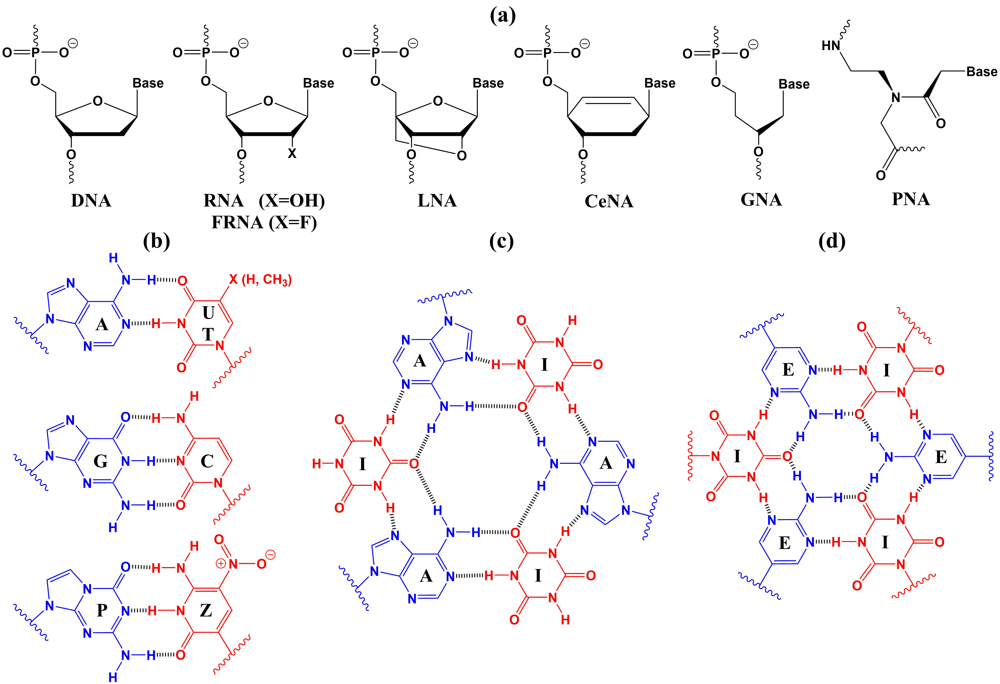

The proto-Nucleic Acid Builder is a software tool for constructing nucleic acid analogs. Click on the links below to learn how to install and use the program.
Here, we present a summary of the idea of the program. For more details, refer to the published article.
Nucleic Acid Analogs
In the context of this program, Nucleic Acid Analogs refer to nucleic acids with any modifications in the nucleobase or the backbone. Additionally, the program can build hexameric nucleic acid analogs. The following image shows a few example of nucleic acid analogs that can be constructed by the program.

Chemical structures of alternative nucleic acids. Panel (a) shows examples of alternative nucleic acid backbones. Panel (b) shows the canonical nucleobases and two examples of alternative nucleobases that can be incorporated into a nucleic acid duplex. Panel (c) shows the interaction between three adenine oligomers and an alternative nucleobase. Panel (d) shows the interaction between oligomers of two alternative nucleobases and the formation of a hexmeric structure. (LNA: locked nucleic acid; CeNA: cyclohexene nucleic acid; GNA: glycol nucleic acid; PNA: peptide nucleic acid; P: 6-amino-5-nitro-2(1H)-pyridone; Z: 2-amino-imidazo[1,2-a]-1,3,5-triazin-4(8H)-one; N: cyanuric acid; M: aminopyrimidine)
Algorithm
The program builds nucleic acid according to the following algorithm:
The algorithm for predicting alternative nucleic acid structures.